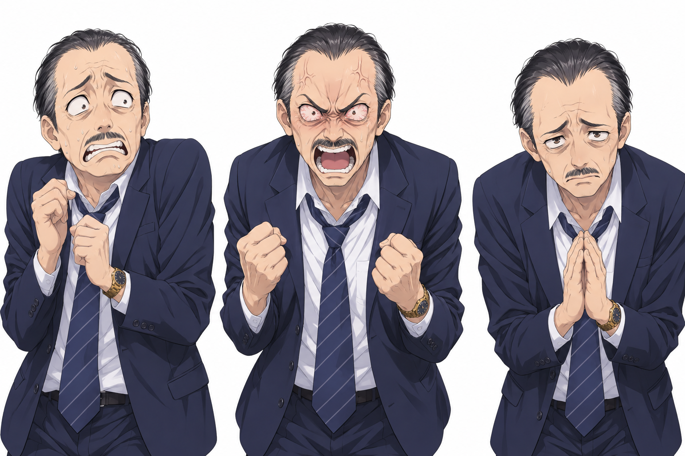
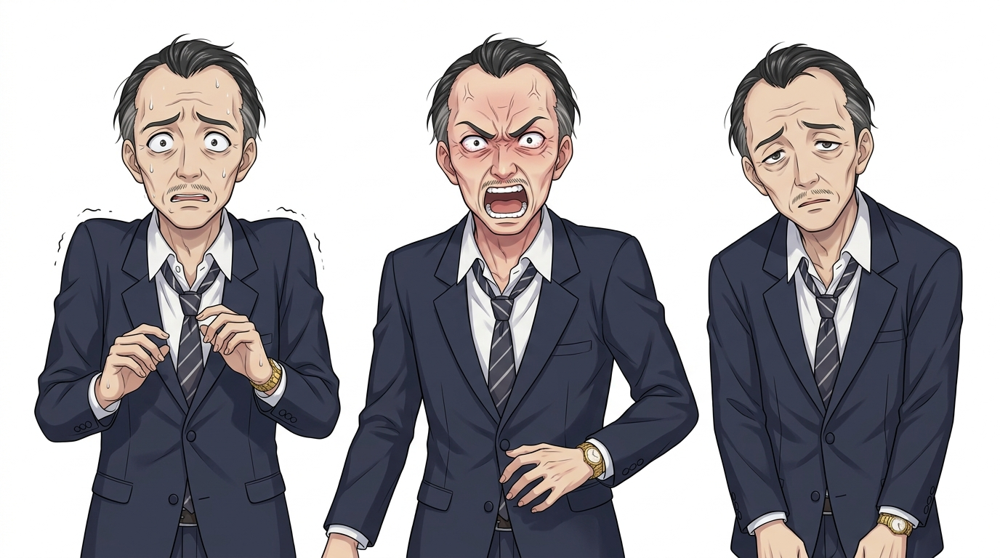

Character expression sheet for a Japanese visual novel, anime illustration style with clean lineart and soft cel shading (similar to modern bishoujo visual novel art). The SAME character shown three times side by side, identical design, outfit, hairstyle and pose framing in each panel, waist-up, facing the viewer, evenly spaced, on a plain pure white background, no borders or text. Character: a Japanese man in his 50s, thin and somewhat shabby-looking, branch manager of a company, receding slicked-back black hair with some gray, small mustache, expensive navy business suit with loosened tie, gold wristwatch. Left panel: terrified, cowering, sweating, eyes wide with fear. Middle panel: hysterical rage, shouting with bloodshot eyes, veins on forehead. Right panel: weak and defeated, drooping eyebrows, timid pleading look, shoulders slumped.

